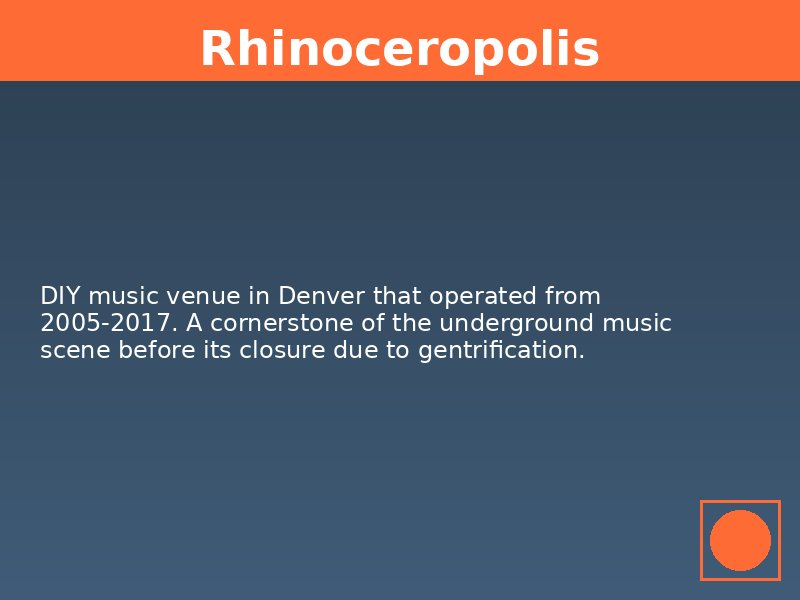

The demolition of Rhinoceropolis in February 2017 was supposed to be the end of something.
 City officials, developers, and music industry professionals treated the closure as inevitable: another DIY venue sacrificed to Denver's "progress" toward becoming a "world-class city." But within six months of Rhino's demolition, new spaces emerged across the metro area—house shows in suburban basements, temporary venues in warehouse districts, rooftop performances in spaces too marginal for commercial development. The underground didn't disappear; it adapted, evolved, and found new ways to exist in the gaps that capital cannot or will not fill.This persistence reveals what James C. Scott calls "the weapons of the weak": the everyday practices through which subordinated communities resist domination without direct confrontation (Scott 1985, 28-47). Denver's DIY music scene has developed what might be called "sonic weapons"—spatial, technological, and organizational strategies that maintain cultural production despite systematic displacement. These tactics don't stop gentrification, but they create persistent spaces of resistance that complicate the total commodification of urban culture.
The data tells a story of creative destruction and creative reconstruction. While our venue database documents the closure of 13 established spaces between 2000 and 2025, it also reveals the emergence of 17 currently active venues, many operating in spaces and formats that didn't exist during the peak of warehouse culture. This isn't nostalgic preservation of what was lost; it's the militant adaptation of communities that refuse to be eliminated by the logic of real estate speculation.
The Tactical Underground: Adaptation Through Dispersion
The post-Rhinoceropolis DIY scene operates through what Michel de Certeau calls "tactical" rather than "strategic" spatial practice: the use of spaces controlled by others rather than the ownership of dedicated cultural territory (de Certeau 1984, 35-39). Where previous generations of DIY venues operated in fixed locations with month-to-month commercial leases, current scenes increasingly rely on temporary occupation of residential, commercial, and industrial spaces that serve multiple functions.
House shows represent the most visible form of this tactical adaptation. Our research documents over 30 residential properties in neighborhoods from Park Hill to Lakewood that host regular DIY performances in basements, garages, and living rooms. These spaces exist in a legal gray area that makes them difficult for authorities to regulate: they operate as private parties rather than commercial venues, they rotate between different locations to avoid sustained official attention, and they rely on social networks rather than public advertising for promotion.
The spatial logic of house shows differs fundamentally from traditional venue culture. Rather than creating permanent cultural territory, house shows create temporary cultural space that disappears after each event. This temporal approach to cultural space makes the scene more difficult to eliminate through conventional development pressure. You can't gentrify a house show; you can only shut down individual events while the broader network persists across multiple locations.
This dispersion strategy has proven remarkably resilient. Even during COVID-19 lockdowns, when commercial venues faced extended closure, house shows continued through modified formats: backyard performances, online streaming from residential spaces, and small-scale events that operated below the threshold of official regulation. The pandemic revealed the tactical advantages of a scene that never depended on commercial cultural infrastructure for its survival.
Technological Resistance: Production in the Age of Smartphones
The democratization of recording technology has enabled forms of cultural production that bypass traditional music industry infrastructure entirely. DIY musicians now produce, distribute, and promote music using equipment that costs less than one month's rent at a commercial venue. This technological shift has created what might be called "bedroom punk": a mode of production that operates entirely outside commercial real estate markets.
Local bands like Nude Sunrise and Fax Gang represent this new mode of DIY production. Their recordings, made in bedrooms and basements using software available for free download, achieve sound quality comparable to commercial studios while maintaining complete creative control. Distribution through platforms like Bandcamp and SoundCloud eliminates the need for physical distribution infrastructure, while social media promotion bypasses traditional music media gatekeepers.
This technological independence has spatial implications. Musicians who can produce completed recordings in residential spaces have less need for commercial rehearsal studios, recording facilities, and large-scale performance venues. The bedroom becomes a space of cultural production rather than just consumption, transforming residential neighborhoods into distributed cultural infrastructure.
The aesthetic implications are equally significant. Bedroom punk's lo-fi production values and intimate recording environments create a sonic aesthetic that explicitly rejects the polish of commercial music production. This isn't amateur music trying to sound professional; it's deliberate sonic resistance to the commodification of cultural production. The DIY scene's embrace of "bad" recording quality becomes a form of cultural politics that celebrates authentic creative expression over market-ready products.
Organizational Innovations: Mutual Aid and Collective Ownership
The contemporary DIY scene has developed organizational models that resist both commercial co-optation and individual ownership. Venue collectives, touring networks, and mutual aid societies create forms of cultural infrastructure that operate outside traditional business models. These organizational innovations represent what David Graeber calls "prefigurative politics": the creation of alternative social relations within current conditions rather than waiting for systemic change (Graeber 2013, 21-40).
The Seventh Circle Music Collective exemplifies this organizational approach. Rather than operating as a traditional venue with individual ownership, Seventh Circle functions as a worker cooperative that makes decisions collectively and shares profits among members. This structure makes the space more resilient to individual financial crises while ensuring that cultural programming serves community needs rather than profit maximization.
Touring networks represent another form of organizational resistance. DIY musicians have created informal cooperation agreements that provide lodging, promotion, and mutual support across regional and national circuits. These networks operate through gift economy principles rather than market transactions: bands provide services for other bands with the expectation of reciprocal support rather than immediate payment. This system creates cultural infrastructure that exists independently of commercial markets or municipal cultural policy.
Mutual aid societies have emerged to support scene members facing housing insecurity, medical emergencies, and other crises exacerbated by gentrification. These organizations pool resources from the DIY community to provide emergency assistance, legal support, and collective bargaining power. The scene's mutual aid networks demonstrate how cultural communities can create alternative economic relations that resist the individualization and commodification of urban life.
Spatial Infiltration: Occupying the Margins
The current DIY scene has developed sophisticated strategies for occupying marginal spaces that commercial development cannot or will not utilize. Rooftop shows, parking lot performances, and temporary occupation of vacant buildings create cultural events in spaces that exist outside traditional zoning categories. This spatial infiltration represents what Hakim Bey calls "temporary autonomous zones": spaces of cultural freedom that emerge in the gaps of administrative control (Bey 1991, 99-126).
The success of events like the annual "Noise Fest" demonstrates the possibilities of temporal occupation. This festival operates by securing temporary use permits for industrial spaces, vacant lots, and underutilized commercial properties. Rather than establishing permanent cultural territory, Noise Fest creates intensive cultural occupation that transforms marginal spaces into sites of community celebration and creative expression.
Parking lot shows represent another form of spatial infiltration. These events, typically held in the parking lots of closed businesses or industrial facilities, create temporary cultural space that requires minimal infrastructure and leaves no permanent trace. The ability to transform any paved surface into a performance venue gives the DIY scene remarkable spatial flexibility and resilience.
The aesthetic of these marginal spaces becomes part of their cultural politics. Performing in parking lots, rooftops, and vacant buildings creates a sonic landscape that explicitly rejects the polished environments of commercial venues. The concrete acoustics, urban noise, and temporary nature of these spaces produce a sound that could not be replicated in purpose-built cultural facilities.
The Persistence of Community: Networks Beyond Space
Perhaps most importantly, the contemporary DIY scene has developed forms of community that exist independently of specific venues or neighborhoods. Social networks that formed around venues like Rhinoceropolis persist despite the closure of their original gathering places. These relationships provide the social foundation for new cultural initiatives, mutual aid networks, and creative collaborations that continue regardless of real estate speculation.
The strength of these social networks became visible during the COVID-19 pandemic, when physical gathering became impossible. DIY musicians created online concert series, collaborative recording projects, and virtual social events that maintained community connections despite spatial separation. These digital networks complemented rather than replaced physical gathering, creating hybrid forms of cultural community that operate across multiple spatial and temporal dimensions.
The persistence of social networks explains why venue closures, while painful, don't eliminate DIY scenes. Communities that formed around specific spaces carry their cultural practices, aesthetic values, and social relationships to new locations. The closure of Rhinoceropolis scattered its community across the metro area, but those relationships enabled the creation of new cultural initiatives that continue Rhino's legacy of experimental music and all-ages programming.
Future Frequencies: Strategies for Sustained Resistance
The evolution of Denver's DIY scene suggests strategies for cultural resistance that could be applied more broadly. The combination of tactical spatial practice, technological independence, cooperative organization, and strong social networks creates forms of cultural infrastructure that are more resilient than traditional venue-based scenes. These strategies don't prevent gentrification, but they create forms of cultural community that can survive and adapt to changing urban conditions.
The success of these resistance strategies depends on understanding cultural space as something that communities create rather than something they own. The DIY scene's embrace of temporary occupation, residential space, and marginal locations represents a fundamental shift from the territorial logic of commercial venues to the temporal logic of cultural practice. This shift enables forms of cultural production that are more flexible, democratic, and resilient than traditional cultural institutions.
The question for the future is whether these resistance strategies can scale beyond individual scenes to create broader networks of cultural resistance. The development of regional touring circuits, mutual aid networks, and cooperative venues suggests the possibility of creating alternative cultural infrastructure that operates independently of commercial real estate markets and municipal cultural policy.
Conclusion: The Sound of Survival
The persistence of Denver's DIY music scene despite systematic venue displacement reveals the limitations of cultural policy strategies that treat music as an amenity rather than as a social practice. The underground's adaptation to dispossession demonstrates forms of cultural resistance that prioritize community relationships over cultural territory, creative expression over commercial viability, and mutual aid over individual success.
These forms of resistance don't offer solutions to gentrification or cultural displacement, but they create spaces of creative freedom that persist despite hostile conditions. The DIY scene's weapons of the weak—house shows, bedroom recording, mutual aid networks, and tactical spatial practice—represent forms of cultural community that refuse to be eliminated by the logic of real estate speculation.
The future of Denver's underground depends on communities that understand culture as something they create together rather than something they consume individually. The scene's embrace of temporary space, collective ownership, and technological independence suggests possibilities for cultural resistance that could inspire broader movements for community control over cultural resources.
The sound of survival isn't the polished product of commercial cultural institutions; it's the raw, immediate, and authentic expression of communities that refuse to be silenced by the violence of displacement. In basements, parking lots, and bedrooms across the metro area, the underground persists—not as nostalgia for what was lost, but as militant optimism for what remains possible.
Bibliography
- Bey, Hakim. 1991. T.A.Z.: The Temporary Autonomous Zone, Ontological Anarchy, Poetic Terrorism. Brooklyn: Autonomedia.
- de Certeau, Michel. 1984. The Practice of Everyday Life. Berkeley: University of California Press.
- Graeber, David. 2013. The Democracy Project: A History, a Crisis, a Movement. New York: Spiegel & Grau.
- Scott, James C. 1985. Weapons of the Weak: Everyday Forms of Peasant Resistance. New Haven: Yale University Press.